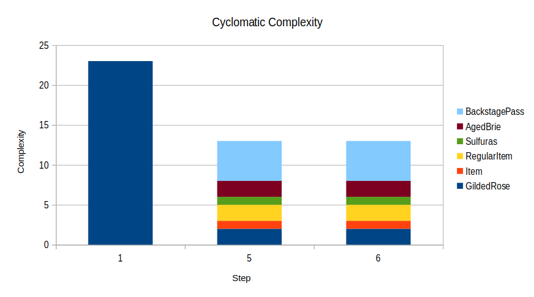

risorse | gilded rose
Gilded Rose è un celebre kata ideato da Terry Hughes ed è disponibile su GitHub nella sua versione originale. Emily Bache ha raccolto un discreto numero di varianti per diversi linguaggi di programmazione qui. Su YouTube c'è un'interessante soluzione proposta da Sandi Metz in Ruby.
Qualche mese fa incappai in questo Twitter thread di Kevlin Henney dove, tra l'altro, si legge:
Unfortunately, most blogs I've seen on it either give unnecessarily complex solutions or they provide a good starting point for further refactoring, i.e., they're en route to a solution, but not quite there yet.
Questo commento ha acceso la mia curiosità ed ho così deciso di affrontarlo anch'io.
Il repository gilded-rose-cpp contiene tutti i passaggi descritti qui di seguito.
Ho clonato l'intero repository GildedRose-Refactoring-Kata di Emily Bache per estrarne l'implementazione C++ che si trova all'interno della cartella cpp. Ho cancellato la cartella .git e copiato tutto il resto in un repository locale creato apposta. Ho infine verificato di essere in grado di compilare il codice e lanciare i test case, in particolare gli unit-test di Catch2 (cfr. commit 44fe195a). Mi sono quindi disfatto di alcune dipendenze non indispensabili, in particolare GoogleTest e Approval tests (cfr. commit 3d7f2837).
Prima di mettere mano al codice conviene definire i test case per verificare la conformità dell'implementazione con le specifiche del problema. Ne ho scritto uno per ognuno dei requisiti espressi nella descrizione del Kata, utilizzando quello presente come template:
TEST_CASE("GildedRoseUnitTest", "Foo")
{
vector<Item> items;
items.push_back(Item("Foo", 0, 0));
GildedRose app(items);
app.updateQuality();
REQUIRE("fixme" == app.items[0].name);
}
Il test case originale.
TEST_CASE("At the end of each day SellIn and Quality decrease for every item")
{
std::vector<Item> items{{"A Generic Item", 2, 5}};
GildedRose gilded_rose{items};
REQUIRE(items[0].sellIn == 2);
REQUIRE(items[0].quality == 5);
gilded_rose.updateQuality();
REQUIRE(items[0].sellIn == 1);
REQUIRE(items[0].quality == 4);
gilded_rose.updateQuality();
REQUIRE(items[0].sellIn == 0);
REQUIRE(items[0].quality == 3);
}
Il primo dei test case definiti.
Ho coperto i seguenti casi:
Al momento il codice non fornisce alcuna garanzia circa la qualità del prodotto “Sulfuras”; per tale motivo ho momentaneamente commentato l'ultimo test case, ripromettendomi di renderlo effetivo non appena se ne presenta l'occasione (cfr. commit 46bd4f88):
/*
TEST_CASE("'Sulfuras' Quality is 80 and it never alters.")
{
std::vector<Item> items{{"Sulfuras, Hand of Ragnaros", 1, 5}};
GildedRose gilded_rose{items};
REQUIRE(items[0].quality == 80);
gilded_rose.updateQuality();
REQUIRE(items[0].quality == 80);
}
*/
Il test case destinato a fallire.
Inizialmente avevo pensato di introdurre un factory method per la creazione di questo prodotto che garantisse che la qualità venisse impostata a 80:
Item make_sulfuras(int sellIn) {
return Item{"Sulfuras, Hand of Ragnaros", sellIn, 80};
}
Factory method per il prodotto “Sulfuras”.
Nulla tuttavia impedirebbe al codice cliente di istanziare un Item con lo stesso nome e quality arbitraria, esattamente come accade nel test case; per questa ragione ho deciso di disabilitare temporaneamente il test.
Il fatto che ogni prodotto presenta una differente politica di aggiornamento della propria qualità e che già si sa che se ne dovrà aggiungere almeno una nuova tipologia — i cosiddetti prodotti “Conjured” — mi fa propendere verso una soluzione polimorfica in cui la responsabilità dell'aggiornamento dell'attributo quality si sposta dall'oggetto GildedRose al singolo prodotto; GildedRose si limiterà a scorrere l'elenco dei prodotti da aggiornare chiedendo ad ognuno di loro di applicare la propria politica di aggiornamento. Questo dovrebbe consentirmi, in un secondo momento, di poter aggiungere nuove tipologie di prodotto senza intervenire sul codice della classe GildedRose.
Ho cominciato col trasformare l'elenco dei prodotti da un vettore di Item in un vettore di smart-pointer di Item in modo tale da abilitare il polimorfismo sui prodotti (nel prosieguo questa fase si dimostrerà inutile, ma tant'è — cfr. commit 842b9dee).
Inizialmente pensavo di procedere per applicazioni di extract method successive, ma la complessità del metodo GildedRose::updateQuality è tale che mi è sembrata un'inutile speculazione; avendo i test case già pronti, ho preferito puntare a definire subito l'interfaccia polimorfica del prodotto con l'obiettivo di soddisfare i test case relativi al prodotto generico:
class RegularItem : public Item
{
public:
RegularItem(std::string name, int sellIn, int quality)
: Item(name, sellIn, quality)
{}
virtual void update()
{
quality -= (sellIn > 0) ? 1 : 2;
quality = std::min(std::max(quality, 0), 50); // std::clamp in C++17
sellIn -= 1;
}
};
using ItemPtr = std::shared_ptr<RegularItem>;
La definizione del prodotto generico.
void GildedRose::updateQuality()
{
for (auto& item : items)
item->update();
}
La nuova versione del metodo GildedRose::updateQuality.
A questo stadio di riscrittura passano solamente i test case del prodotto generico, ovvero i primi tre (cfr. commit 249094cf). L'obiettivo ora è di soddisfare incrementalmente tutti gli altri.
Mi preme risolvere subito la questione della qualità fissa e costante del prodotto “Sulfuras”; scommento perciò il test case relativo e definisco il nuovo prodotto:
class Sulfuras : public RegularItem
{
public:
Sulfuras(int sellIn)
: RegularItem("Sulfuras, Hand of Ragnaros", sellIn, 80)
{}
void update() override
{}
};
La definizione dell'oggetto Sulfuras.
Ho approfittato per spostare le definizioni degli oggetti Item e RegularItem dal file GildedRose.h negli omonimi file (cfr. commmit e243093d).
Nota: un RegularItem denominato “Sulfuras, Hand of Ragnaros” segue le logiche di aggiornamento della qualità tipiche di un prodotto convenzionale; per ottenerne uno con le peculiarità richieste dalle specifiche è necessario istanziare un oggetto di tipo Sulfuras.
L'obiettivo ora è soddisfare i test case rimanenti. Comincio da quelli di “Aged Brie”:
class AgedBrie : public RegularItem
{
public:
AgedBrie(int sellIn, int quality)
: RegularItem("Aged Brie", sellIn, quality)
{}
void update() override
{
quality += (sellIn > 0) ? 1 : 2;
quality = std::min(std::max(quality, 0), 50);
sellIn -= 1;
}
};
La definizione dell'oggetto AgedBrie.
Esistono a questo punto tre implementazioni diverse del metodo RegularItem::update, attendo tuttavia di completare la copertura dei test case prima di decidere se procedere al refactoring (cfr. commit 362922df).
Restano da sistemare gli ultimi test case, quelli relativi al prodotto “Backstage Pass”:
class BackstagePass : public RegularItem
{
public:
BackstagePass(int sellIn, int quality)
: RegularItem("Backstage passes to a TAFKAL80ETC concert", sellIn, quality)
{}
void update() override
{
if (sellIn > 10)
quality += 1;
else if (sellIn > 5)
quality += 2;
else if (sellIn > 0)
quality += 3;
else
quality = 0;
quality = std::min(std::max(quality, 0), 50);
sellIn -= 1;
}
};
La definizione dell'oggetto BackstagePass.
Viene così finalmente ristabilita la funzionalità originale del codice (cfr. commit c8502bdb).
È conveniente rifattorizzare il metodo update della gerarchia RegularItem, posto che esiste in quattro versioni differenti?
// RegularItem::update
quality -= (sellIn > 0) ? 1 : 2;
quality = std::min(std::max(quality, 0), 50);
sellIn -= 1;
// Sulfuras::update
// empty!
// AgedBrie::update
quality += (sellIn > 0) ? 1 : 2;
quality = std::min(std::max(quality, 0), 50);
sellIn -= 1;
// BackstagePass::update
if (sellIn > 10)
quality += 1;
else if (sellIn > 5)
quality += 2;
else if (sellIn > 0)
quality += 3;
else
quality = 0;
quality = std::min(std::max(quality, 0), 50);
sellIn -= 1;
Individuo tre fasi nell'aggiornamento delle proprietà di un prodotto:
Ogni tipologia di prodotto presenta tuttavia delle peculiarità:
| RegularItem | Sulfuras | Aged Brie | Backstage Pass | |
|---|---|---|---|---|
| quality(t) | decresce | costante | aumenta | complicato(!) |
| 0≤quality≤50 | sì | no | sì | sì |
| sellIn | decresce | costante | descresce | descresce |
Le diverse implementazioni del metodo RegularItem::update.
Ho pensato quindi di modificare l'interfaccia di RegularItem trasformando il metodo update in un metodo convenzionale che richiama tre metodi virtuali che costituiscono una nuova interfaccia virtuale protetta dell'oggetto:
class RegularItem : public Item
{
public:
RegularItem(std::string name, int sellIn, int quality)
: Item(name, sellIn, quality)
{}
void update()
{
update_quality();
clamp_quality();
update_sellIn();
}
protected:
virtual void update_quality()
{
quality -= (sellIn > 0) ? 1 : 2;
}
virtual void clamp_quality()
{
quality = std::min(std::max(quality, 0), 50);
}
virtual void update_sellIn()
{
sellIn -= 1;
}
};
La nuova implementazione di RegularItem.
La nuova versione del codice soddisfa ancora tutti i requisiti richiesti (cfr. commit 668b40db); ma rappresenta davvero una miglioria? A livello di complessità ciclomatica non c'è nessun progresso, dato che il valore della metrica rimane a 13:
| Step | GildedRose | Item | RegularItem | Sulfuras | AgedBrie | BackstagePass | Sum |
|---|---|---|---|---|---|---|---|
| 1 | 23 | - | - | - | - | - | 23 |
| 5 | 2 | 1 | 2 | 1 | 2 | 5 | 13 |
| 6 | 2 | 1 | 2 | 1 | 2 | 5 | 13 |
Complessità ciclomatica globale delle soluzioni proposte, determinata con SourceMonitor.
Complessità globale delle soluzioni proposte.
A livello di righe di codice (LOC) si passa dalle 93 della versione originale del codice alle 101 della prima soluzione, alle 114 della seconda. Della prima soluzione non mi piace la presenza in più punti della riga:
quality = std::min(std::max(quality, 0), 50);
Della seconda invece non mi convince il frazionamento del metodo RegularItem::update. Probabilmente esiste un'alternativa migliore.
I test case istanziano inutilmente un oggetto di tipo GildedRose per verificare la politica di aggiornamento dei diversi prodotti. Ho riscritto i test case eliminando l'istanziazione superflua e ne ho aggiunto uno nuovo che verifica il corretto funzionamento del metodo GildedRose::updateQuality (cfr. commit 530ee6f1):
TEST_CASE("At the end of each day SellIn and Quality decrease for every item")
{
RegularItem item{"A Generic Item", 2, 5};
REQUIRE(item.sellIn == 2);
REQUIRE(item.quality == 5);
item.update();
REQUIRE(item.sellIn == 1);
REQUIRE(item.quality == 4);
item.update();
REQUIRE(item.sellIn == 0);
REQUIRE(item.quality == 3);
}
Esempio di test case che non fa più uso dell'oggetto GiledRose.
TEST_CASE("All items are updated at once")
{
std::vector<ItemPtr> items {
make_item("A generic Item", 5, 3),
make_aged_brie(2, 6),
make_sulfuras(5),
make_backstage_pass(0, 9)
};
GildedRose{items}.updateQuality();
REQUIRE(items[0]->sellIn == 4);
REQUIRE(items[0]->quality == 2);
REQUIRE(items[1]->sellIn == 1);
REQUIRE(items[1]->quality == 7);
REQUIRE(items[2]->sellIn == 5);
REQUIRE(items[2]->quality == 80);
REQUIRE(items[3]->sellIn == -1);
REQUIRE(items[3]->quality == 0);
}
Il nuovo test case dedicato specificatamente all'oggetto GiledRose.
Manca oramai solo il supporto per i prodotti “Conjured”; come anticipato è sufficiente aggiungere la definizione del nuovo tipo di prodotto e il test case relativo:
class ConjuredItem : public RegularItem
{
public:
ConjuredItem(std::string name, int sellIn, int quality)
: RegularItem(name, sellIn, quality)
{}
void update_quality() override
{
quality -= (sellIn > 0) ? 2 : 4;
}
};
Il nuovo tipo di prodotto “Conjured”.
TEST_CASE("'Conjured' items degrade in Quality twice as fast as normal items")
{
ConjuredItem item{"A Conjured Item", 2, 9};
REQUIRE(item.sellIn == 2);
REQUIRE(item.quality == 9);
item.update();
REQUIRE(item.sellIn == 1);
REQUIRE(item.quality == 7);
item.update();
REQUIRE(item.sellIn == 0);
REQUIRE(item.quality == 5);
item.update();
REQUIRE(item.sellIn == -1);
REQUIRE(item.quality == 1);
item.update();
REQUIRE(item.sellIn == -2);
REQUIRE(item.quality == 0);
}
Il test case per i prodotti “Conjured”.
A questo punto il kata si può considerare completato (cfr. commit 67a4d62d).
Col senno di poi:
Pagina modificata il 13/07/2022